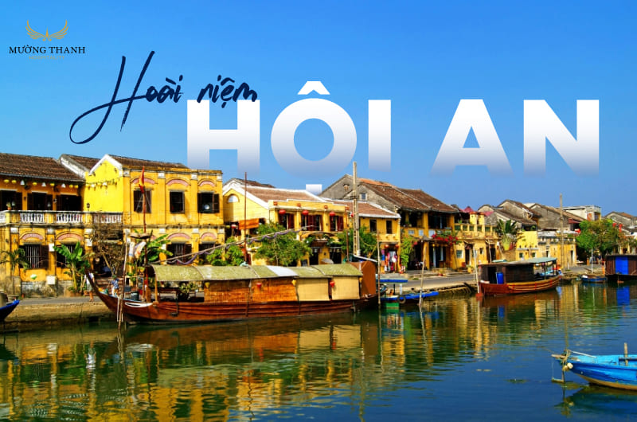

Ha Long Bay is famous for its stunning limestone karsts and beautiful caves. One of the best things about Ha Long Bay is the opportunity to explore its many islands and hidden gems. You can enjoy activities like kayaking and taking a scenic cruise through the bay’s emerald waters.
Hoi An Ancient Town still has its own distinct beauty lying in every street corner, every roof, and even in the small streets. This place has an ancient grace with features that cannot be found anywhere else. Coming here, visitors can feel the affection from the friendly locals.

Welcome to Sapa, Vietnam - a hidden gem nestled in the mountainous region of the country. Sapa is a place of natural beauty, with cascading rice terraces, misty valleys, and majestic peaks. It is also a cultural hub, home to several ethnic minority groups with unique customs and traditions. Join us as we explore this magical destination and discover the wonders of Vietnam travel.

As an exotic island in Kien Giang Province, Phu Quoc Island is crowded with tourists from all over the world who want to enjoy their dream-like vacations with their beloved.

Hue Vietnam, the former imperial capital, boasts a long-lasting treasure trove of world-renowned ancient wonders, distinctive cultural traits, and delightful traditional cuisine, where visitors can immerse themselves in Vietnam's illustrious history as if they are traveling back in time.